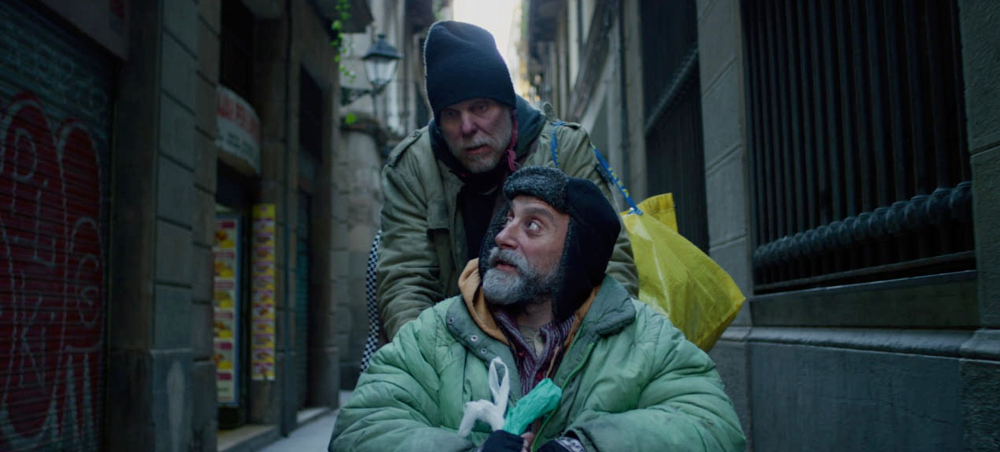

{kind=link}
{kind=link}
{kind=link}
{kind=link}
{kind=link}
{kind=link}
{kind=link}
{kind=link}
{kind=link}
Director & Writer — Jarmo Lampela
Producer — Juha Kukkonen
Cast — Juha Kukkonen, Raül Llopart, Carla de Otero, Aina Clotet, Marc Clotet, Damien Pizarro, Camila Jover, María Riudavets, Arántzazu Ruíz, Sonia Albert-Sobrino
Production — Buenos Bandidos Producciones, Mago Production, Vegetarian Films

Feature film
Don Quijote
de Barcelona
de Barcelona
Drama · 114' · 2024 · Finland / Spain
Olli is a Finnish drifter in his late fifties, living on the streets of Barcelona. One night he takes shelter in a doorway and meets Lluc, a former academic who has lost everything except his sharp mind and quiet pride. What begins as a chance encounter becomes a deep, stubborn friendship.
Together they navigate the daily struggle of survival — finding food, dodging trouble, holding on to the small rituals that keep a person human. Through references to Dalí, Cervantes and Finnish folk music, the film traces how art and imagination become acts of resistance against despair.
Don Quijote de Barcelona is a film about friendship, dignity and the refusal to disappear — set against the sunlit and shadowed streets of a city that has no time for its dreamers.
Trailer
Credits
Technical
114 min · Drama
Color
Spanish, Finnish
Finland / Spain · 2024
Screenings
Blue Sea Film Festival (World Premiere, 2024)
Espoo Ciné IFF (2025)
Finnish theatrical release: 24 July 2026
Sales & Distribution
Finland (theatrical):
Pirkanmaan elokuvakeskus (PEK)
International sales:
Buenos Bandidos Producciones
Private screening available upon request.